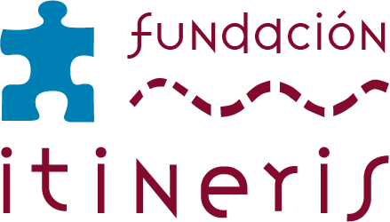

Fundacion Itineris CUIT: 30-70915814-3 Banco de Galicia Cuenta Corriente nro 502650887 CBU: 00700887 20000005026573
Por favor acompañe su transferencia con un mail a info@itineris.org.ar, nos gustaría agradecerle su apoyo